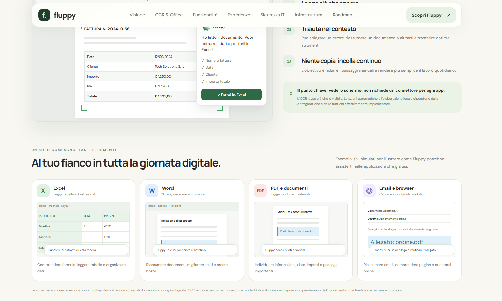

ExcelLegge tabelle ed estrae dati
PRODOTTOQ.TÀPREZZOMonitor2€150Tastiera5€20Totale7€400
 Fluppy: vuoi estrarre questa tabella?
Fluppy: vuoi estrarre questa tabella?


 curioso, non invadente
sicurezza con personalità
privacy by design
curioso, non invadente
sicurezza con personalità
privacy by design
Dalla sicurezza digitale dei più piccoli alla consapevolezza informatica al lavoro. Fluppy vuole rendere la tecnologia più personale, comprensibile e sicura.
✳Creato da Francesco Petillo · Un progetto in evoluzione
L'intelligenza artificiale dovrebbe aiutarti, senza costringerti a rinunciare al controllo dei tuoi dati.
Fluppy usa l'OCR per leggere testo, tabelle e informazioni sullo schermo. Così può aiutarti in Excel, Word, PDF, email e browser senza un connettore cloud per ogni applicazione.

Testi, tabelle, finestre e informazioni visibili, anche in applicazioni diverse.
Spiega un errore, riassume un documento, trasferisce dati tra strumenti.
Meno passaggi manuali, lavoro quotidiano più semplice.
 Fluppy: vuoi estrarre questa tabella?Fluppy: lo vuoi più chiaro e sintetico?Fluppy: ecco i punti principali.Fluppy: vuoi un riepilogo o verificare l'allegato?
Fluppy: vuoi estrarre questa tabella?Fluppy: lo vuoi più chiaro e sintetico?Fluppy: ecco i punti principali.Fluppy: vuoi un riepilogo o verificare l'allegato?Schermate e mockup sono illustrativi, non screenshot di applicazioni già integrate. OCR, accesso allo schermo e azioni disponibili dipenderanno dall'implementazione finale e dai permessi concessi.
Un bambino, una persona a casa e un dipendente vivono contesti diversi. Stessa mascotte, modi diversi di aiutarti.
Accompagna i bambini e aiuta i genitori a impostare limiti e protezioni adatti all'età.

Semplifica le attività quotidiane e aiuta chi ha meno familiarità con il computer.


Una configurazione professionale costruita per integrarsi con i processi IT, nel rispetto delle policy e della riservatezza dei dati.


Una presenza amichevole sul desktop con piccoli interventi contestuali, sviluppati passo dopo passo.
Monitora la cartella Download e segnala i file che meritano attenzione. Un livello in più di consapevolezza, non un antivirus né una garanzia di sicurezza.
● Presente nel prototipo
La mascotte attira l'attenzione su eventi selezionati con messaggi comprensibili e meno impersonali.
Promemoria giocosi durante il gioco. Per prendere consapevolezza, non per sorvegliare o punire.
Promemoria per proteggere password e dati riservati quando usi strumenti AI supportati.
◐ In evoluzione
Profili, permessi, tono e livello di intervento adattabili alla persona e al contesto.
Collegare gli strumenti di sicurezza già presenti e trasformare gli alert tecnici in avvisi chiari, direttamente sul PC dell'utente.
Nel progetto DOTTY, da cui nasce FLUPPY, è prevista una collaborazione con Microsoft Defender per richiedere scansioni di file sospetti. Fluppy rende più comprensibili i segnali di rischio, senza sostituire l'antivirus.
Funzioni da verificare nella versione corrente
Integrare SIEM, IDS/IPS e strumenti endpoint per portare gli avvisi rilevanti fino alla persona interessata, prima che debba aprire una richiesta al supporto.
Le piattaforme mostrate sono esempi di ecosistemi di interesse, non integrazioni già attive. Ogni collegamento richiede connettori, autorizzazioni e verifiche specifiche; la disponibilità dipenderà dallo sviluppo del progetto e dalle API dei fornitori.
La privacy non dovrebbe essere una scelta tra comodità e controllo. Due modalità di distribuzione, per esigenze diverse.
PER CASA
Un servizio AI ospitato su infrastruttura in Italia.
PER ORGANIZZAZIONI
AI eseguita nell'infrastruttura controllata dall'azienda.
La localizzazione dei server non garantisce da sola la conformità normativa; anche fornitori, telemetria, backup, conservazione e accessi devono essere progettati correttamente. Le modalità descritte sono obiettivi architetturali, non servizi già operativi.

Comportamento dell'AI, strumenti utilizzabili e permessi del sistema operativo sono livelli distinti. Personalizzazione sì, ma con confini chiari.
Separiamo ciò che esiste da ciò che vogliamo costruire, così la visione resta ambiziosa ma trasparente.
Mascotte interattiva, avvisi selezionati, monitoraggio dei download e guida contestuale.
In evoluzioneImpostazioni dedicate, animazioni, profili e controllo più chiaro delle preferenze.
PianificatoProfili famiglia e azienda, controlli web più avanzati e distribuzione privata per le organizzazioni.
Da progettare

Un progetto personale di Francesco Petillo, tra intelligenza artificiale, interazione desktop, cybersecurity e controllo dei dati. Questo è solo l'inizio.
Torna all'inizio↑